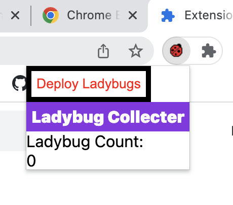
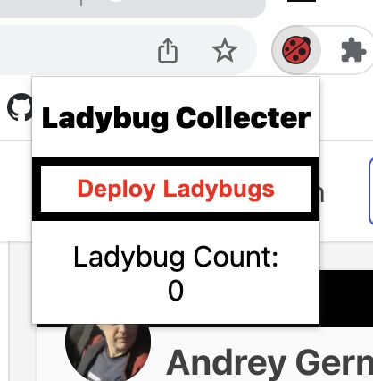

The development process that I followed for this project started with generating the
image that I would use as my icon that would be displayed in the extension library as
well as on the top of my browser window. Although the production of this icon wasn't a
required part of the project, it gave me an opportunity to experiment with making web-
compatible icons with Adobe Illustrator. I made icons in 16x16 pixel and 128x128 pixel
sizes. From there, I wrote the HTML and CSS files for my pop-up window, which helped
me determine what the exact function of my extension would be given the functionalities
that would be displayed in the pop-up window. Next, I wrote the pop-up JavaScript file,
which signified my content-script to update the browser page when the 'deploy ladybugs'
button was clicked. From there, I wrote my content-script file, where I used the query-
select-all function to query all of the paragraph HTML elements on the page and then
append the little ladybug images to the end. I also wrote a CSS file to go along with
the content-script file to manage the size of the ladybug image. I also authored the
script to remove the ladybug images when they were clicked upon and increment the
ladybug count in the pop-up screen.

Unfinished pop-up screen

Finished pop-up screen